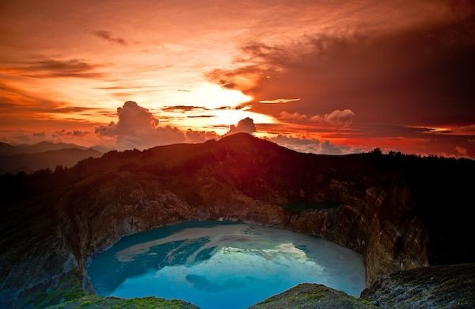
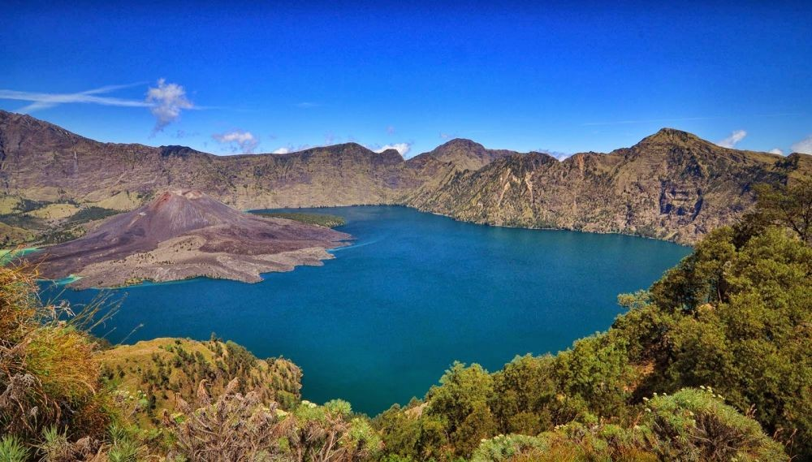

Siapa yang tak kenal danau terbesar se-Indonesia ini? Danau Toba ini terbentuk karena adanya letusan gunung berapi yang sangat dahsyat. Letusan tersebut menghasilkan kaldera yang kemudian terisi air. Di tengah danau terdapat pulau bernama Samosir.Â

Pasti sudah gak asing lagi kan dengan danau yang satu ini? Danau ini pernah masuk dalam film 5 CM yang menceritakan tentang perjalanan lima sahabat mendaki Gunung Semeru. Butuh perjuangan untuk menuju ke sini. Kamu harus melakukan pendakian yang cukup berat. Karena letaknya berada di kawasan Taman Nasional Bromo Tengger Semeru.

Danau Kelimutu ini terdiri dari tiga danau yang berbeda di puncak Gunung Kelimutu, Flores. Istimewanya, ketiga danau ini memiliki warna yang berbeda.Masyarakat sekitar meyakini danau ini memiliki kekuatan mistis. Jika kamu ingin menikmati keindahannya, dini hari adalah waktu yang tepat, sekalian menyaksikan panorama matahari terbit.
Danau cantik ini terletak di wilayah Kabupaten Wonosobo, Jawa Tengah. Dinamakan telaga warna, karena air danau ini bisa berubah sesuka hatinya. Kamu bisa ke sini sambil menenangkan pikiran.

Kalau Gunung Semeru memiliki Ranu Kumbolo, Gunung Rinjani di Lombok juga memiliki danau bernama Danau Segara Anak. Sama seperti Ranu Kumbolo, kamu harus trekking terlebih dahulu untuk mencapainya. Pemandangannya bikin mata terpana!
Danau yang terletak di Desa Labuan Kelambu, Kalimantan Timur, ini sudah sangat populer di telinga para traveler. Danau ini dinamakan Labuan Cermin karena airnya sangat jernih seperti cermin. Jadi kamu bisa melihat keindahan yang ada di kedalaman danau ini dengan mata telanjang.Danau ini juga terkenal dengan sebutan danau dua rasa, karena memiliki dua rasa dari perpaduan dari air laut dan air tawar. Kamu bisa melihat keindahannya dari warnanya yang luar biasa cantik dengan gradasi warna biru tua, biru muda, hijau toska, dan putih.